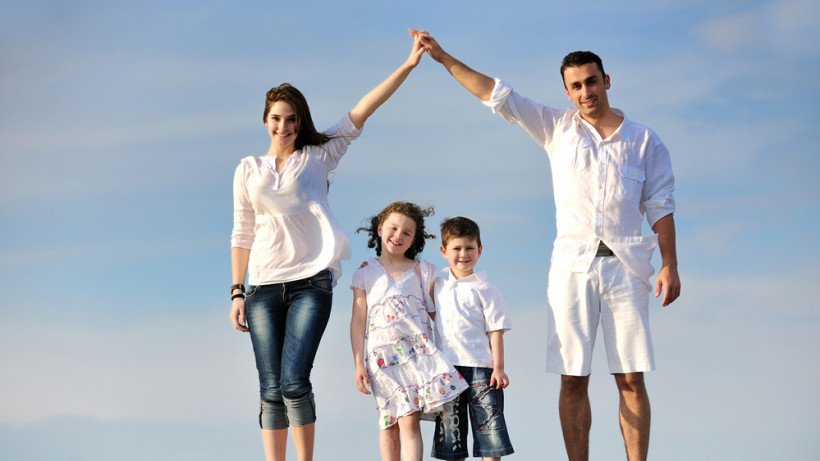

- це лаболаторія розвитку сучасних поколінь. Посередник для батьків в процесі соціалізації на всіх етапах дорослішання дітей.
Наше завдання:
- навчити дитину адаптуватись до потреб майбутнього!
Наша мета:
допомогти дітям в процесі світопізнання
допомога батькам бути для дітей надійним прихистком - сім"єю в якій буде найзатишніше та найвеселіше зростати
забезпечення дітям атмосфери прийняття з їх радощами і перемогами, поразками чи розчаруванням
забезпечення дітям атмосфери прийняття з їх радощами і перемогами, поразками чи розчаруванням
навчання дітей мистeцтву вчитися!

В Дім Дім кожна сім'я знайде свій дім...
В Дім Дім кожна сім'я знайде свій Дім.
Без упереджень, прив'язки до релігійних чи політичних переконань. З неухильним наголосом на людські цінності і поваги до всього живого.
В природній спосіб, безнав'язування, даючи змогу все відчути добровільно.
Ми закладаємо принцип постійного осмислення в дитячих групах та тісну комунікацію з батьками. навчання етики життя. Сокральне переживання.